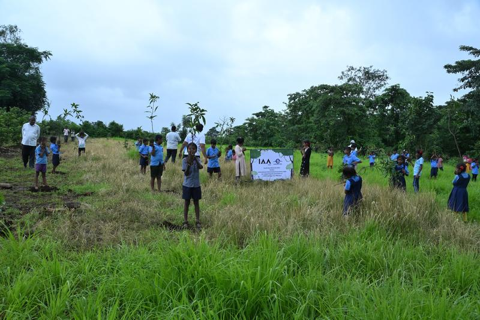

Join Our Movement
Partner with us, volunteer your time or launch local green initiatives for a healthier, greener India.
Support
We also believe that sustainability and profitability can go hand in hand, and we work with businesses to identify practical pathways to go green, reduce environmental impact, create value and build long-term sustainable growth.
Earth Day Network India also holds NITI Aayog's NGO Darpan registration and 12A registration under the Government of India's Income Tax Act, and CSR-1 Certification from the Ministry of Corporate Affairs.
CSR focus areas and details to be supplied by the client.
Partner With Us
Partner formEarth Day Network India has worked with and engaged more than 130 organisations across the corporate, government, education, research, nonprofit and community sectors. These include the Ministry of Environment, Forest and Climate Change, UNICEF, UNESCO-MGIEP, the National Service Scheme, National Cadet Corps, WWF, TERI, the Centre for Environment Education, Tata Power, ITC, UPS, BBC Media Action, United Way India, SEWA, the Energy Swaraj Foundation, Oxford University (Said School of Business), KIIT and Banaras Hindu University.
Our partnerships bring technical expertise, institutional networks, community knowledge and on-the-ground implementation. We welcome partners who can help expand meaningful programmes, strengthen measurable outcomes and replicate successful approaches across India.
Among the organisations we have worked with
- Ministry of Environment, Forest and Climate Change
- UNICEF
- UNESCO-MGIEP
- National Service Scheme
- National Cadet Corps
- WWF
- TERI
- Centre for Environment Education
- Tata Power
- ITC
- UPS
- BBC Media Action
- United Way India
- SEWA
- Energy Swaraj Foundation
- Oxford University (Saïd School of Business)
- KIIT
- Banaras Hindu University
Every act counts. Collective action multiplies its impact.
We need all hands on deck—and many more green actions—to build a healthier, more sustainable world that benefits everyone, today and for generations to come.
Whether you are an individual, educational institution, community organisation, business or funder, you can help advance practical environmental action across India. Join a programme, share your expertise, support an initiative or partner with us to take proven solutions further.
Volunteer
Fields marked * are required. We use your details only to respond — see our privacy policy.
Project Interest Forms
Partner (common link), CSR and other forms (e.g., Plantation).
Frequently Asked Questions
Common questions about partnering, volunteering, CSR eligibility and projects with Earth Day Network India.
Organisations across corporate, government, education, research, and civil society sectors can collaborate with Earth Day Network India on nationwide tree planting, clean energy awareness, youth climate literacy, and community cleanups. Submit our Partner form below to start a conversation.
Yes. Earth Day Network India is a registered trust holding CSR-1 Certification from the Ministry of Corporate Affairs, 12A registration under the Government of India's Income Tax Act, and NITI Aayog's NGO Darpan registration.
Individuals can participate in local community cleanups, tree planting drives, morning assembly school networks, and youth awareness campaigns. Submit our Volunteer form to join the volunteer roster.
Nominations and enquiries for Earth Day Heroes, Star Municipal Leaders, Star Women's Group, Rising Stars, and other awards can be submitted directly through our Project Interest Forms under 'Other project interest'.
Educational institutions can engage in our Morning Assembly Network, Young Climate Champions, Climate Clock assemblies, Eco-Comics workshops, and Star Campus green audits by registering interest on our website.
Communities, panchayats, and partner organisations can request fruit-tree saplings and reforestation support by selecting 'Plantation' on our Project Interest Forms.